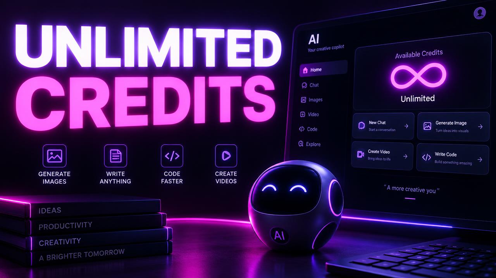

Tanvir was one prompt away from finishing his client's website when a message appeared: credit limit reached. The client demo was the next morning. His first thoughts were: "Is my project gone? Does Lovable have unlimited credits somewhere? What do I do now?"
This guide answers those questions honestly: whether Lovable has unlimited credits, what happens when Lovable credits run out, and the smartest options to keep working.
Does Lovable Have Unlimited Credits?
No standard Lovable plan offers truly unlimited AI credits. Every plan has a credit allowance, because every AI request uses real computing power. Higher plans give you more credits, not infinite ones.
Be careful with "unlimited credits" offers
You may see websites or videos promising Lovable unlimited credits through tricks, shared accounts or hacks. Be careful:
- Shared or hacked accounts can be banned, and you may lose your projects.
- Suspicious tools can steal your login or project data.
- Anything that breaks the platform's rules is risky for your work and your clients.
Your projects are worth more than a shortcut. Stick to legitimate plans and trusted sellers.
Can You Get Unlimited Lovable Credits?
Not in the literal sense. What you can do:
- Choose a larger plan with a bigger monthly allowance.
- Top up credits when your plan allows it.
- Use credits efficiently, so your allowance feels much bigger. See how to save Lovable credits.
For many users, better prompts alone make their existing credits last twice as long.
What Happens When Lovable Credits Run Out?
When you reach the Lovable credit limit:
What stops - New AI prompts that build or change your project - AI-powered fixes and features
What keeps working - Your projects are saved and not deleted - Published websites stay online for your visitors - You can still open, view and preview your projects - Manual edits may still be possible, depending on your setup
Running out of credits pauses AI building. It does not break your site.
Step-by-Step: What to Do When You Ran Out of Credits
Step 1: Don't panic Your work is safe. Take a screenshot of where you stopped and note the next task.
Step 2: Check your reset time Open Plans & Credits in your workspace. If you are on the free plan, your daily credits will come back after the reset. Learn more in our Lovable free plan guide.
Step 3: Decide if it can wait If the next task is not urgent, wait for the reset and plan your next prompts carefully in the meantime.
Step 4: Upgrade or top up if urgent Deadline tomorrow? Upgrading or adding credits is the fastest legitimate way to continue.
Step 5: Prepare precise prompts While waiting, write your next prompts in a note. When credits return, you will get more done with fewer of them.
Why You Hit the Credit Limit
Common reasons:
- Long debugging loops
- Large redesigns late in the project
- Vague prompts that caused rework
- Teammates using the same workspace balance
Our guide on why Lovable uses so many credits explains how to find and fix each one.
How to Avoid Hitting the Limit Next Time
| Habit | Why it helps |
|---|---|
| Plan the project first | Fewer changes of direction |
| One feature per prompt | Smaller, cheaper steps |
| Precise bug reports | Fewer fix attempts |
| Weekly usage check | Spot problems early |
| Keep a credit buffer before deadlines | No last-minute surprises |
Tip for freelancers: keep a small credit buffer before client demos. Never start a big feature the night before a presentation.
How Tanvir Solved It
Tanvir checked his reset time, saw it was only a few hours away, and wrote a single precise prompt for the final section while he waited. When credits came back, one prompt finished the job, and the demo went smoothly.
If you regularly need more credits for bigger projects, you can compare available options on our products page.
Frequently Asked Questions
Does Lovable have unlimited credits? No. Every Lovable plan has a credit allowance. Higher plans give more credits, but none are truly unlimited.
What happens when my Lovable credits run out? You cannot send new AI build requests until credits reset or you add more. Your projects and published sites keep working.
Will my published website go offline if I run out of credits? No. Running out of credits only pauses AI editing. Your live site stays online.
Are "unlimited Lovable credits" hacks safe? No. They can lead to banned accounts, lost projects or stolen login details. Use only legitimate plans and trusted sellers.
Keep reading
If this topic is useful, you may also want to read how Lovable credits work, the Lovable credit system explained, when your credits reset and the Lovable extension guide.
- #lovable unlimited credits
- #lovable credit limit reached
- #lovable ran out of credits
- #lovable credit limit